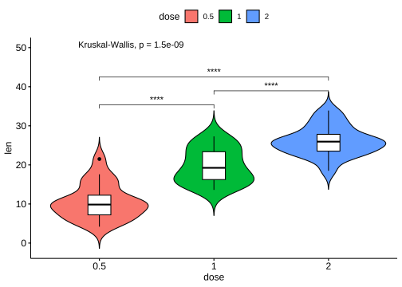
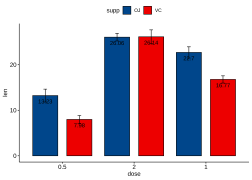
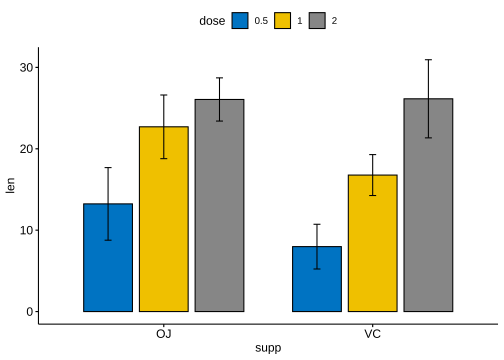

Code

Code
my_compare <- list(c("0.5","1"),c("1","2"),c("0.5","2"))
p+stat_compare_means(comparisons = my_compare,method = "t.test")+
stat_compare_means(label.y = 50) # 总体p值https://exts.ggplot2.tidyverse.org/gallery/
ggplot2 with Publication Ready Graphics in R
https://rpkgs.datanovia.com/ggpubr/
https://www.datanovia.com/en/blog/tag/ggpubr/
my_compare <- list(c("0.5","1"),c("1","2"),c("0.5","2"))
p+stat_compare_means(comparisons = my_compare,method = "t.test")+
stat_compare_means(label.y = 50) # 总体p值ggviolin(data = df,
x = "dose",
y = "len",
fill = "dose",
palette = "gsea",
add = "boxplot",
add.params = list(fill="white"),
)+
stat_compare_means(comparisons = my_compare,
label = "p.signif",
method = "t.test")+
stat_compare_means(label.y = 50) # 总体p值
ggbarplot(
data = df,
x = "dose",
y = "len",
fill = "supp",
color = "black",
palette = "lancet",
add = c("mean_se"),
# mean_sd, mean_ci
error.plot = "errorbar",
# upper_errorbar,"lower_errorbar",pointrange,"linerange", "crossbar",
label = TRUE,
lab.pos = "in",
position = position_dodge(),
orientation = "vertical",
order = c("0.5", "2", "1"),
)
ToothGrowth$dose <- as.factor(ToothGrowth$dose)
# Comparisons against reference
stat.test <- compare_means(
len ~ dose, data = ToothGrowth, group.by = "supp",
method = "t.test", ref.group = "0.5"
)
stat.test
#> # A tibble: 4 × 9
#> supp .y. group1 group2 p p.adj p.format p.signif method
#> <fct> <chr> <chr> <chr> <dbl> <dbl> <chr> <chr> <chr>
#> 1 VC len 0.5 1 0.000000681 0.000002 6.8e-07 **** T-test
#> 2 VC len 0.5 2 0.0000000468 0.00000019 4.7e-08 **** T-test
#> 3 OJ len 0.5 1 0.0000878 0.000088 8.8e-05 **** T-test
#> 4 OJ len 0.5 2 0.00000132 0.0000026 1.3e-06 **** T-test
bp <- ggbarplot(ToothGrowth, x = "supp", y = "len",
fill = "dose", palette = "jco",
add = "mean_sd", add.params = list(group = "dose"),
position = position_dodge(0.8))
bp
bp + stat_pvalue_manual(
stat.test, x = "supp", y.position = 33,
label = "p={p.format}",
position = position_dodge(0.8)
)library(ggpubr)
library(rstatix)
df <- ToothGrowth
df$dose <- as.factor(df$dose)
bp <- ggbarplot(
df,
x = "dose",
y = "len",
add = "mean_sd",
color = "supp",
palette = c("#00AFBB", "#E7B800"),
position = position_dodge(0.8)
)
# 统计检验
stat.test <- df %>%
group_by(dose) %>%
t_test(len ~ supp) %>%
adjust_pvalue(method = "bonferroni") %>%
add_significance("p.adj")
stat.test <- stat.test %>%
add_xy_position(fun = "mean_sd", x = "dose", dodge = 0.8)
stat.test2 <- df %>%
t_test(len ~ dose, p.adjust.method = "bonferroni")
stat.test2 <- stat.test2 %>%
add_xy_position(x = "dose")
pwc <- df %>%
group_by(supp) %>%
t_test(len ~ dose, p.adjust.method = "bonferroni")
pwc
#> # A tibble: 6 × 11
#> supp .y. group1 group2 n1 n2 statistic df p p.adj
#> * <fct> <chr> <chr> <chr> <int> <int> <dbl> <dbl> <dbl> <dbl>
#> 1 OJ len 0.5 1 10 10 -5.05 17.7 0.0000878 0.000263
#> 2 OJ len 0.5 2 10 10 -7.82 14.7 0.00000132 0.00000396
#> 3 OJ len 1 2 10 10 -2.25 15.8 0.039 0.118
#> 4 VC len 0.5 1 10 10 -7.46 17.9 0.000000681 0.00000204
#> 5 VC len 0.5 2 10 10 -10.4 14.3 0.0000000468 0.00000014
#> 6 VC len 1 2 10 10 -5.47 13.6 0.0000916 0.000275
#> # ℹ 1 more variable: p.adj.signif <chr>
pwc <- pwc %>%
add_xy_position(
x = "dose",
fun = "mean_sd",
group = "supp",
dodge = 0.8
)
# 组间组内复合
bp +
stat_pvalue_manual(stat.test, label = "p.adj.signif", tip.length = 0.01) +
stat_pvalue_manual(
stat.test2,
label = "p",
tip.length = 0.02,
step.increase = 0.05
) +
scale_y_continuous(expand = expansion(mult = c(0.05, 0.1))) +
stat_pvalue_manual(
pwc,
color = "supp",
step.group.by = "supp",
tip.length = 0,
step.increase = 0.1
)
# 滑珠图
mtcars |> rownames_to_column(var = "name") |>
mutate(
cyl=factor(cyl)
) |>
ggdotchart(
x = "name",
y = "mpg",
color = "cyl",
palette = "jco",
sorting = "ascending",
add = "segments",
ggtheme = theme_pubr()
) |
#克利夫兰点图
mtcars |> rownames_to_column(var = "name") |>
mutate(
cyl=factor(cyl)
) |>
ggdotchart(
x = "name",
y = "mpg",
color = "cyl",
palette = "jco",
sorting = "descending",
add = "segments",
rotate = TRUE,
group = "cyl",
dot.size = 6,
label = round(mtcars$mpg),
font.label = list(color="white",size=9,vjust=0.5),
ggtheme = theme_pubr()
)
library(ggrepel)
ggplot(data = mtcars, aes(x= wt, y = mpg)) +
geom_point(color = "steelblue") +
geom_hline(yintercept = median(mtcars$mpg),
linetype = "dashed",
color = "steelblue") +
geom_label(x = 5.2, y = 20.5,
label = "median MPG",
color = "white",
fill = "steelblue",
size = 3) +
geom_text_repel(label = row.names(mtcars), size = 3)
# geom_label_repel 带白底外框https://github.com/plotly/plotly.R
Converting a ggplot2 graph to an interactive plotly graph
# Customizing the plotly tooltip
p <- ggplot(mtcars,
aes(x = disp, y=mpg, color=cyl,
text = paste(name, "\n",
"mpg:", mpg, "\n",
"disp:", disp, "\n",
"cyl:", cyl, "\n",
"gear:", gear))) +
geom_point()